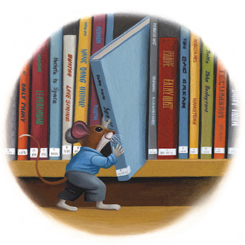

Thank you for visiting the Day By Day Ohio website, a service of the State Library of Ohio in partnership with Ohio Ready to Read.
The State Library of Ohio and Ohio Ready to Read are committed to promoting family literacy and family engagement across Ohio. Research shows that a parent or caregiver who spends time talking, singing, reading, and playing with their child helps to increase the child’s vocabulary, background knowledge, and an array of other skills. Early interactions with children directly and positively affect brain development.
Explore these calendars, websites, and opportunities to help you thrive as your child’s first teacher.
Downloadable/Printable Monthly Literacy Calendars
- Colorado Day by Day Family Literacy Activity Calendar
- Connecticut Ready to Read Early Literacy Calendar
- PBS Monthly Activity Calendars
- Reading Is Fundamental Pre-K Activity Calendar
- Reading Is Fundamental K–5 Activity Calendar
Websites and Opportunities for Families
-
Find the Ohio Public Libraries Near You
There are over 700 public library branches in Ohio and you and your family are welcome at every one of them! Use this online lookup from the Ohio Public Library Information Network to find public libraries in your county or to look up a specific library by name.
-
Dolly Parton’s Imagination Library of Ohio
Dolly Parton’s Imagination Library of Ohio provides young children a free book every month from birth to age five. Families in any Ohio county may enroll their young children in this program as early as birth. There is no charge for families to participate.
-
Dolly Parton’s Imagination Library of Ohio Book Guides | Ohio Department of Children and Youth
Explore a growing collection of two-page book guides to stretch the story and engage in conversation and play after reading the books your child receives from Dolly Parton’s Imagination Library of Ohio.
-
Early Literacy | Ohio Department of Children and Youth
Early literacy is what children know about reading and writing before they learn to read or write. Read about the benchmarks your child may reach each year from birth through age 5 and discover tips to help your little one learn and grow as a pre-reader.
-
Kindergarten Readiness | Ohio Department of Children and Youth
Did you know that kindergarten readiness begins at birth? Children start learning about language, numbers, and the world around them from the day they are born. You can take simple steps to set your child up for success in kindergarten and beyond.
-
This collaboration between the Ohio Department of Education and Workforce and the Ohio Coalition for the Education of Children with Disabilities features accessible activities and resources to engage and educate families. The site’s glossary of educational terms is especially helpful for parents and guardians!
-
Resources for parents and others to learn about brain development, early language and literacy, and child development. The site includes family-focused information, tools, and tips on many everyday topics.
-
Zero to Three’s Baby Brain Map
This developmental-scientist-approved tool turns early brain science into practical strategies for caregivers and professionals. The Baby Brain Map makes it easy to explore how early experiences shape development and provides simple, real-life ways to support healthy growth and emotional well-being.
-
Reading Rockets: Literacy at Home
Tools, tips, booklists, and other free resources for families from Reading Rockets, a national multimedia literacy initiative offering information and support on how young children learn to read, why so many struggle, and how caring adults can help.
-
Reading Rockets: Dialogic Reading
This powerful, fun method of reading interactively with children turns books into opportunities for conversation and learning. In dialogic reading, the adult helps the child become the teller of the story. Dialogic reading encourages social skills such as taking turns and listening; gives children practice in sorting and communicating their thoughts; and helps children understand that their input is important and meaningful.
-
PBS KIDS for Parents: Literacy
Learn about reading, writing, speaking, and listening skills at every age from 2–8, explore how children become readers and writers, and discover ways to help them develop by talking, reading, and writing together every day.
-
This 55-minute documentary produced by PBS station KSPS covers early brain development including brain growth, social interactions, serve & return, stress and self-regulation, executive function, and much more. It is available to stream at this link.
-
Embrace Race: Supporting Healthy Racial Learning in Early Childhood
Early childhood is the critical time in the development of children’s ideas and attitudes about race. Adults who engage children explicitly in thoughtful, informed, and age-appropriate ways ensure they grow up racially healthy. This resource guide will help.
-
Reading is Fundamental Family Resources
Reading is Fundamental encourages reading through a wide variety of early literacy skill-building activities and provides helpful resources for parents and childcare professionals.
-
This Centers for Disease Control and Prevention website offers many resources about healthy early childhood development for parents and guardians. A wide variety of no-cost materials including checklists, tip sheets, growth charts, books, and more are available for download here.